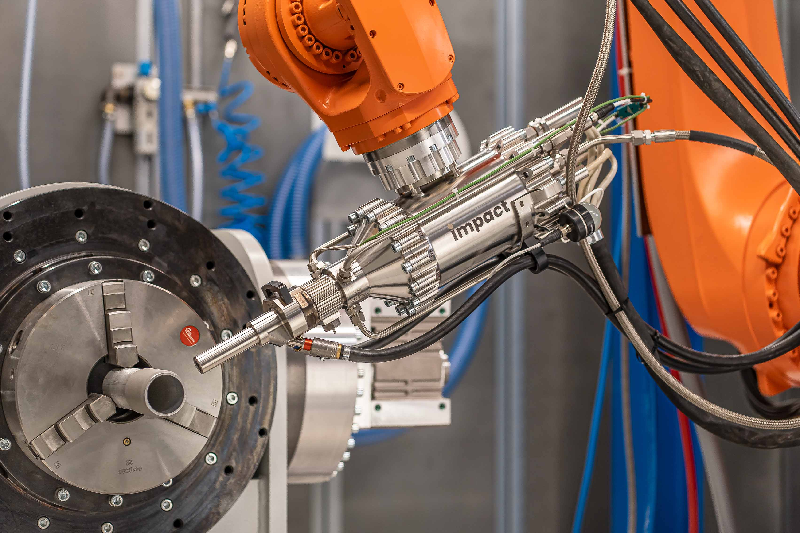

FEATURED HIGHLIGHT
Sub-second Suppression
Supersonic Cold-Gas Plume Discharge
12V micro-solenoid valve releases pressurized clean-agent nitrogen directly into the anomalous circuit bay within 12 milliseconds.